Real user listening history with artist play counts
Data Size
Original dataset: 17.5 million user-artist records from 358,868 users
Sampled: 50,000 records for analysis
Generated listening events: 2,039,174 timestamped plays across 2024
Unique artists: 292,363
DATA ATTRIBUTES
Original attributes:
user_id – Anonymous user identifier
artist_mbid – MusicBrainz artist ID
artist – Artist name
plays – Number of times user listened to artist
Generated attributes:
genre – Assigned based on artist
timestamp – listening date in 2024
Derived Attributes:
month – Month
month_name – Month name
season – Season
week_of_year – Week number
VISUALIZATION
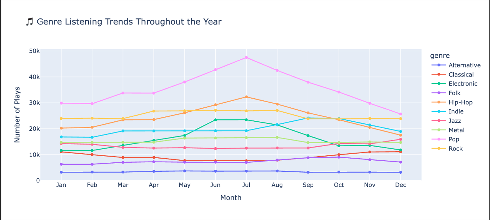
VISUALIZATION
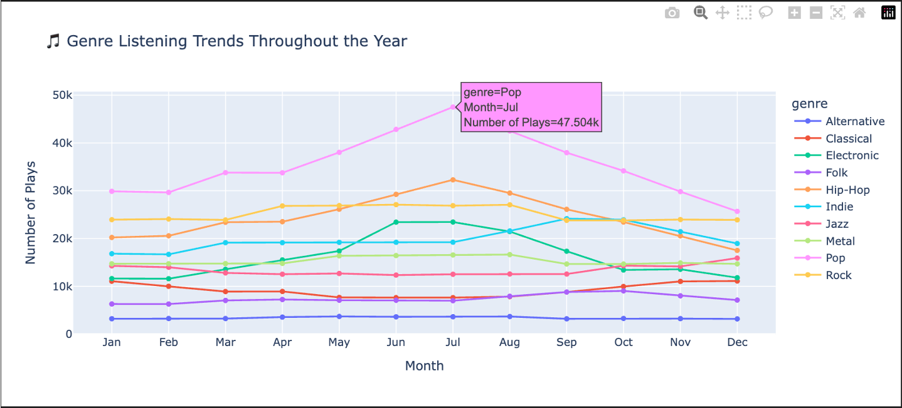
ANALYSIS
Peak Summer Listening:
Music listening peaks in summer at ~44,000 plays, dropping to ~34,000 in winter months.
Pop Dominates Year-Round:
Pop is the most popular genre across all seasons, followed by Hip-Hop and Rock.
Seasonal Genre Preferences:
Upbeat genres (Pop, Hip-Hop, Electronic) surge in summer while Jazz and Classical peak in winter.
Electronic Shows Strongest Seasonality:
Electronic music nearly doubles from winter to summer, showing the most dramatic weather-dependent pattern.
VISUALIZATION
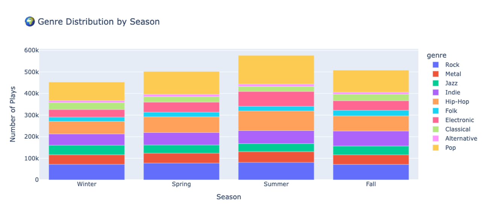
VISUALIZATION
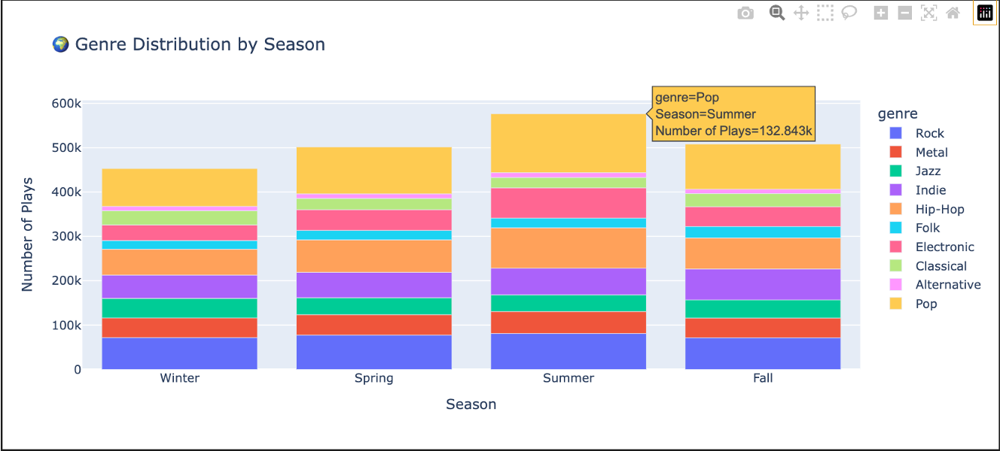
ANALYSIS
Summer Has Highest Listening Volume:
Summer shows the tallest bar at ~576k total plays, while Winter has the lowest at ~453k plays.
Pop Dominates All Seasons:
Pop (yellow/gold) is the largest segment in every season, representing roughly 20-25% of all plays.
Seasonal Composition Changes:
Summer bars show proportionally more Pop, Hip-Hop, and Electronic (upper sections expand), while Winter shows relatively more Jazz and Classical.
Consistent Genre Distribution:
Despite volume changes, the relative ordering of genres remains stable across seasons, with Pop, Hip-Hop, and Rock consistently forming the top three layers.
VISUALIZATION
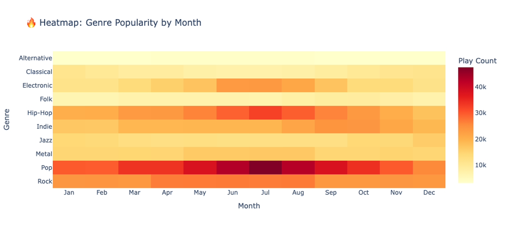
VISUALIZATION
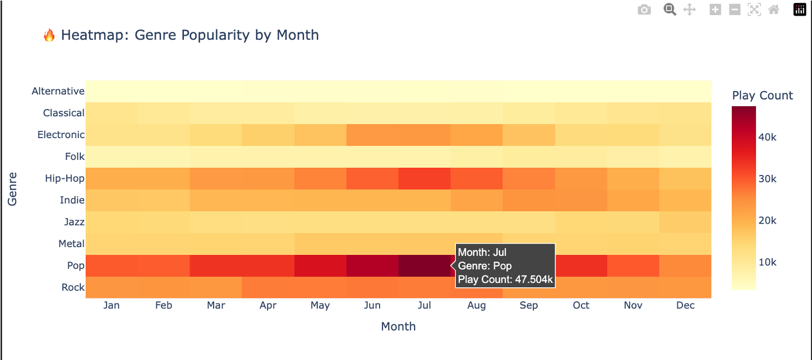
ANALYSIS
Pop Peaks in Summer Months:
Pop shows the darkest red cells in June-August, indicating highest play counts during summer (~3k-14k plays per month).
Jazz and Classical:
Jazz and Classical show their darkest colors in December-February, demonstrating counter-seasonal patterns compared to other genres.
Electronic is Most Summer-Dependent:
Electronic displays the sharpest contrast between winter (light yellow: ~3-4k) and summer (deep orange: ~6-8k), showing strongest seasonal variation.
Most Genres Follow Similar Pattern:
Hip-Hop, Rock, Indie, Metal, and Folk all show warmer colors (more plays) in the May-August period, indicating a shared summer preference.
VISUALIZATION (ALTAIR)
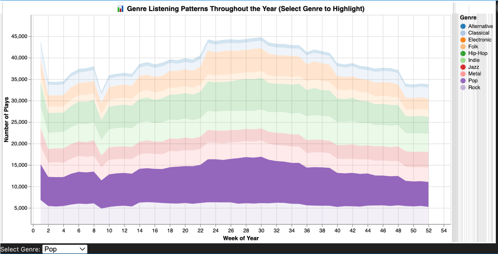
VISUALIZATION (ALTAIR)
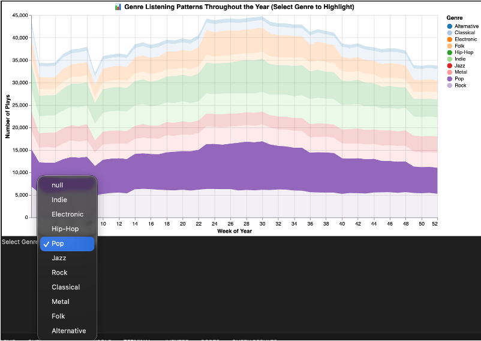
VISUALIZATION (ALTAIR)
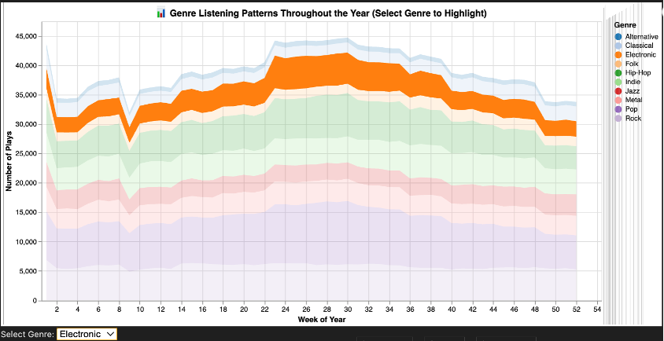
ANALYSIS
Clear Summer Peak Pattern:
The stacked area chart shows total listening volume rising from ~15k plays in winter to ~45k in summer (weeks 20-30), with declining back through fall.
Pop Forms the Rock-Solid Base:
Pop (purple base layer) remains consistently the largest single genre throughout the year, providing a stable ~8k-14k plays per week at different times of season.
Mid-Year Genre Expansion:
All genre layers visibly broaden during summer months (May-August), showing that seasonal increases affect multiple genres simultaneously, not just one.
Interactive Highlight Features:
The second visualization shows brush selection capability, allowing users to isolate specific time periods and see detailed breakdowns in the side bar chart for deeper analysis.
VISUALIZATION (D3)
🌍 Seasonal Genre Distribution - Interactive Sunburst
VISUALIZATION (D3)
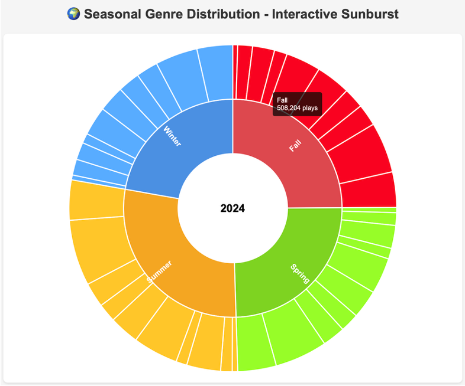
VISUALIZATION (D3)
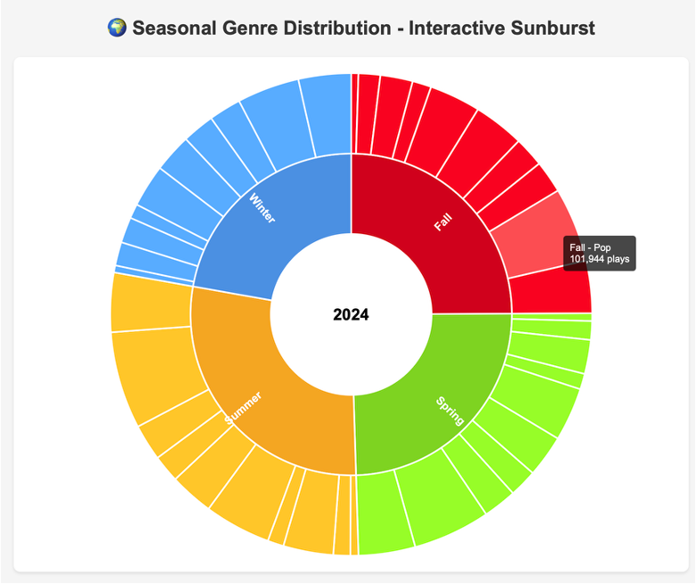
ANALYSIS
Hierarchical Season-Genre Structure:
The sunburst organizes 4 top-level hierarchy with seasonal (inner ring) divided into genre segments (outer ring), showing the entire system in one radial view by genre.
Fall Has Largest Share:
Fall (red quadrant) occupies the largest portion of the circle, indicating it had the most total plays (~508k), followed by Summer, Spring, and Winter.
Pop Dominates Within Each Season:
Pop forms the largest outer segment within every seasonal quadrant, confirming its year-round dominance regardless of season.
Interactive Genre Details:
The tooltip (visible in second image) reveals exact play counts when hovering over segments, showing Fall-Pop had 101,943 plays, making data exploration intuitive and precise.
CONCLUSION
Strong Seasonal Patterns:
Summer listening peaks 30% higher than winter, driven by weather and lifestyle changes.
Pop Dominates Year-Round:
Pop consistently represents 20-25% of all plays across every season.
Moods Match the Season:
Upbeat genres (Pop, Hip-Hop, Electronic) surge in summer while calmer genres (Jazz, Classical) peak in winter.
Strategic Opportunities:
Platforms and artists can optimize releases and recommendations by aligning with predictable seasonal genre preferences.